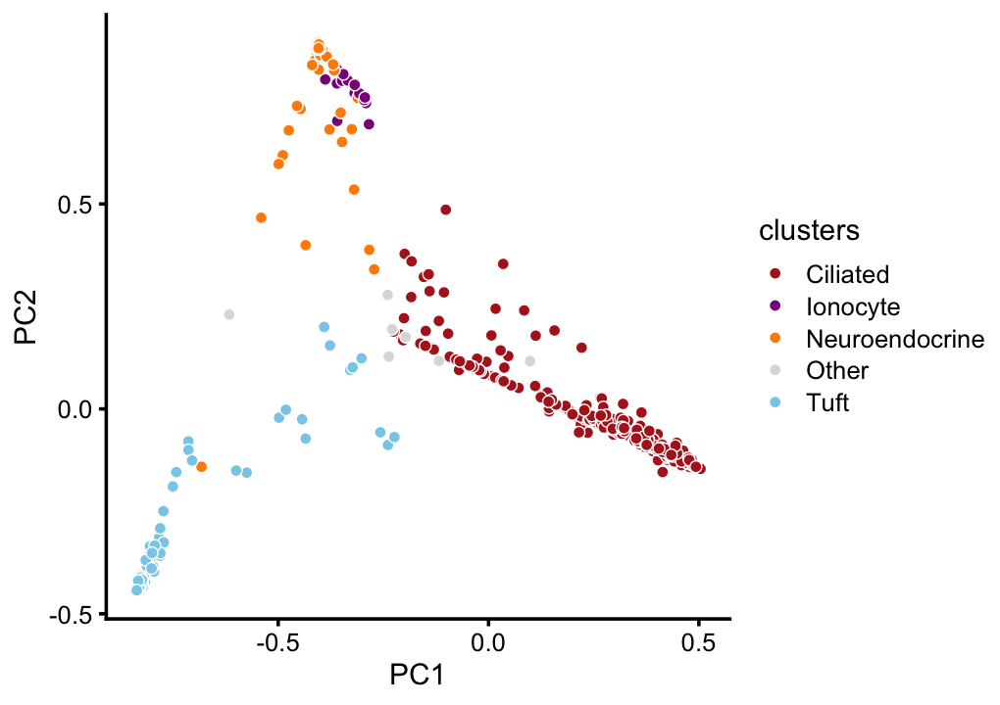
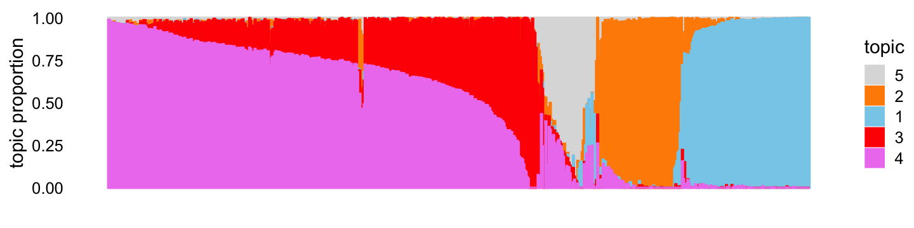
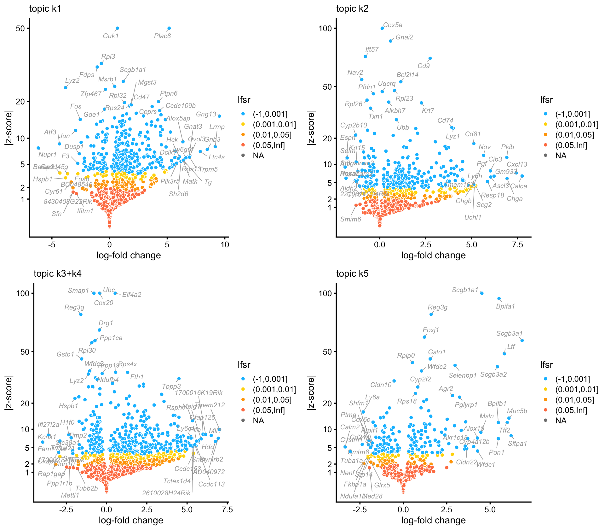
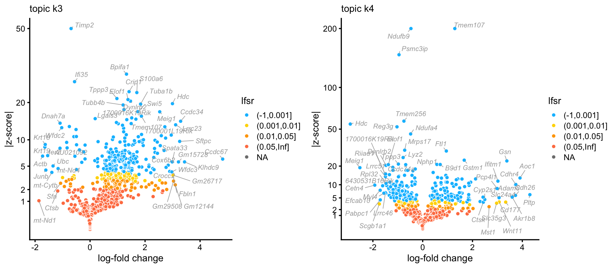

Analysis of rare epithelial cell types in droplet data
Peter Carbonetto
Last updated: 2022-02-12
Checks: 7 0
Knit directory: single-cell-topics/analysis/
This reproducible R Markdown analysis was created with workflowr (version 1.7.0). The Checks tab describes the reproducibility checks that were applied when the results were created. The Past versions tab lists the development history.
Great! Since the R Markdown file has been committed to the Git repository, you know the exact version of the code that produced these results.
Great job! The global environment was empty. Objects defined in the global environment can affect the analysis in your R Markdown file in unknown ways. For reproduciblity it’s best to always run the code in an empty environment.
The command set.seed(1) was run prior to running the code in the R Markdown file. Setting a seed ensures that any results that rely on randomness, e.g. subsampling or permutations, are reproducible.
Great job! Recording the operating system, R version, and package versions is critical for reproducibility.
Nice! There were no cached chunks for this analysis, so you can be confident that you successfully produced the results during this run.
Great job! Using relative paths to the files within your workflowr project makes it easier to run your code on other machines.
Great! You are using Git for version control. Tracking code development and connecting the code version to the results is critical for reproducibility.
The results in this page were generated with repository version f05a9a0. See the Past versions tab to see a history of the changes made to the R Markdown and HTML files.
Note that you need to be careful to ensure that all relevant files for the analysis have been committed to Git prior to generating the results (you can use wflow_publish or wflow_git_commit). workflowr only checks the R Markdown file, but you know if there are other scripts or data files that it depends on. Below is the status of the Git repository when the results were generated:
Ignored files:
Ignored: data/droplet.RData
Ignored: data/pbmc_68k.RData
Ignored: data/pbmc_purified.RData
Ignored: data/pulseseq.RData
Ignored: output/droplet/diff-count-droplet.RData
Ignored: output/droplet/fits-droplet.RData
Ignored: output/droplet/rds/
Ignored: output/pbmc-purified/fits-pbmc-purified.RData
Ignored: output/pbmc-purified/rds/
Ignored: output/pulseseq/diff-count-pulseseq.RData
Ignored: output/pulseseq/fits-pulseseq.RData
Ignored: output/pulseseq/rds/
Ignored: output/sims/
Untracked files:
Untracked: analysis/de_analysis_detailed_look_cache/
Untracked: analysis/de_analysis_detailed_look_more_cache/
Untracked: analysis/structure-plot-pulseseq-merged.png
Untracked: plots/
Note that any generated files, e.g. HTML, png, CSS, etc., are not included in this status report because it is ok for generated content to have uncommitted changes.
These are the previous versions of the repository in which changes were made to the R Markdown (analysis/droplet_rare.Rmd) and HTML (docs/droplet_rare.html) files. If you’ve configured a remote Git repository (see ?wflow_git_remote), click on the hyperlinks in the table below to view the files as they were in that past version.
| File | Version | Author | Date | Message |
|---|---|---|---|---|
| Rmd | f05a9a0 | Peter Carbonetto | 2022-02-12 | workflowr::wflow_publish(“droplet_rare.Rmd”) |
| html | 323f198 | Peter Carbonetto | 2022-02-11 | Added volcano plots to droplet_rare analysis. |
| Rmd | 1f5b204 | Peter Carbonetto | 2022-02-11 | workflowr::wflow_publish(“droplet_rare.Rmd”, verbose = TRUE) |
| html | 0ed3329 | Peter Carbonetto | 2022-02-11 | Added structure plot to droplet_rare analysis. |
| Rmd | 096729f | Peter Carbonetto | 2022-02-11 | workflowr::wflow_publish(“droplet_rare.Rmd”) |
| html | a64f3ea | Peter Carbonetto | 2022-02-11 | Added loglik-vs-k plot to droplet_rare analysis. |
| Rmd | 1bd5cef | Peter Carbonetto | 2022-02-11 | workflowr::wflow_publish(“droplet_rare.Rmd”) |
| Rmd | b4b6ab0 | Peter Carbonetto | 2022-02-11 | Working on droplet_rare analysis. |
| html | 0301b6e | Peter Carbonetto | 2022-02-10 | First build of droplet_rare analysis. |
| Rmd | 687fadc | Peter Carbonetto | 2022-02-10 | workflowr::wflow_publish(“droplet_rare.Rmd”) |
| html | 271518c | Peter Carbonetto | 2022-02-10 | Added another link to overview page. |
| Rmd | ad0daee | Peter Carbonetto | 2022-02-10 | workflowr::wflow_publish(“index.Rmd”) |
Based on the topic modeling results in the droplet data, with \(K = 7\) topics, one of the topics, topic 6, appears to be capturing rare, specialized epithelial cells, including ionocyte, tuft and neuroendocrine cells. Therefore, here we reanalyze the cells with membership to this topic.
Load the packages used in the analysis.
library(fastTopics)
library(ggplot2)
library(cowplot)Initialize the sequence of pseudorandom numbers.
set.seed(1)Load the previously prepared count data.
load("../data/droplet.RData")Load the results on the rare cell types.
out <- readRDS("../output/droplet/refit-droplet.rds")
fits <- out$fits
de <- out$de
de_merged <- out$de_mergedBelow we will look more closely at the topic model with \(K = 5\) topics:
fit <- poisson2multinom(fits$k5)Find the subset of genes and samples that were used to fit the model:
rownames(samples) <- with(samples,paste(mouse.id,barcode,sep = "_"))
samples <- samples[rownames(fit$L),]
counts <- counts[rownames(fit$L),rownames(fit$F)]
dim(counts)
# [1] 637 15594This plot shows the improvement in the log-likelihood as the rank, \(K\), is increased. The log-likelihoods are shown relative to the log-likelihood at \(K = 2\).
plot_loglik_vs_rank(fits) +
theme_cowplot(font_size = 12)
This PCA plot showing the top two PCs of the topic proportions shows that the topics correspond well with the clusters identified by Montoro et al (2018):
clusters <- as.character(samples$tissue)
clusters[clusters == "Basal" |
clusters == "Club" |
clusters == "Goblet"] <- "Other"
clusters <- factor(clusters)
tissue_colors <- c("firebrick", # ciliated
"darkmagenta", # ionocyte
"darkorange", # neuroendocrine
"gainsboro", # other
"skyblue") # tuft
p <- pca_plot(fit,pcs = 1:2,fill = clusters) +
scale_fill_manual(values = tissue_colors)
# Scale for 'fill' is already present. Adding another scale for 'fill', which
# will replace the existing scale.
print(p)
| Version | Author | Date |
|---|---|---|
| 0ed3329 | Peter Carbonetto | 2022-02-11 |
ggsave("../plots/pca_cluster_droplet_rare.png",p,
height = 3,width = 4,dpi = 450,bg = "white")The structure plot summarizes the estimated topic proportions:
set.seed(1)
topic_colors <- c("skyblue","darkorange","red","violet","gainsboro")
topics <- c(5,2,1,3,4)
p <- structure_plot(fit,topics = topics,colors = topic_colors,
perplexity = 70,num_threads = 2,verbose = FALSE)
print(p)
| Version | Author | Date |
|---|---|---|
| 0ed3329 | Peter Carbonetto | 2022-02-11 |
These volcano plots summarize the results of the GoM DE analysis after merging topics 3 and 4:
p1 <- volcano_plot(de_merged,k = "k1",ymax = 50)
p2 <- volcano_plot(de_merged,k = "k2",ymax = 100)
p3 <- volcano_plot(de_merged,k = "k3+k4",ymax = 100)
p4 <- volcano_plot(de_merged,k = "k5",ymax = 100)
plot_grid(p1,p2,p3,p4)
| Version | Author | Date |
|---|---|---|
| 323f198 | Peter Carbonetto | 2022-02-11 |
Judging by the most distinctive genes in these volcano plots, the topics capture tuft cells (topic 1), neuroendocrine cells (topic 2) and ciliated cells (topics 3 + 4).
Meanwhile, from the structure plot above, we see that topics 3 and 4 capture continuous variation in the ciliated cells. The most distinctive genes in these two topics suggest…
p5 <- volcano_plot(de,k = "k3",ymax = 50)
p6 <- volcano_plot(de,k = "k4",ymax = 200)
plot_grid(p5,p6)
| Version | Author | Date |
|---|---|---|
| 323f198 | Peter Carbonetto | 2022-02-11 |
TO DO: Create interactive volcano plots.
sessionInfo()
# R version 3.6.2 (2019-12-12)
# Platform: x86_64-apple-darwin15.6.0 (64-bit)
# Running under: macOS Catalina 10.15.7
#
# Matrix products: default
# BLAS: /Library/Frameworks/R.framework/Versions/3.6/Resources/lib/libRblas.0.dylib
# LAPACK: /Library/Frameworks/R.framework/Versions/3.6/Resources/lib/libRlapack.dylib
#
# locale:
# [1] en_US.UTF-8/en_US.UTF-8/en_US.UTF-8/C/en_US.UTF-8/en_US.UTF-8
#
# attached base packages:
# [1] stats graphics grDevices utils datasets methods base
#
# other attached packages:
# [1] cowplot_1.0.0 ggplot2_3.3.5 fastTopics_0.6-98
#
# loaded via a namespace (and not attached):
# [1] httr_1.4.2 tidyr_1.1.3 jsonlite_1.7.2 viridisLite_0.3.0
# [5] RcppParallel_4.4.2 assertthat_0.2.1 highr_0.8 mixsqp_0.3-46
# [9] yaml_2.2.0 progress_1.2.2 ggrepel_0.9.1 pillar_1.6.2
# [13] backports_1.1.5 lattice_0.20-38 quantreg_5.54 glue_1.4.2
# [17] quadprog_1.5-8 digest_0.6.23 promises_1.1.0 colorspace_1.4-1
# [21] htmltools_0.4.0 httpuv_1.5.2 Matrix_1.2-18 pkgconfig_2.0.3
# [25] invgamma_1.1 SparseM_1.78 purrr_0.3.4 scales_1.1.0
# [29] whisker_0.4 later_1.0.0 Rtsne_0.15 MatrixModels_0.4-1
# [33] git2r_0.26.1 tibble_3.1.3 farver_2.0.1 generics_0.0.2
# [37] ellipsis_0.3.2 withr_2.4.2 ashr_2.2-51 pbapply_1.5-1
# [41] lazyeval_0.2.2 magrittr_2.0.1 crayon_1.4.1 mcmc_0.9-6
# [45] evaluate_0.14 fs_1.3.1 fansi_0.4.0 MASS_7.3-51.4
# [49] truncnorm_1.0-8 tools_3.6.2 data.table_1.12.8 prettyunits_1.1.1
# [53] hms_1.1.0 lifecycle_1.0.0 stringr_1.4.0 MCMCpack_1.4-5
# [57] plotly_4.9.2 munsell_0.5.0 irlba_2.3.3 compiler_3.6.2
# [61] jquerylib_0.1.4 systemfonts_1.0.2 rlang_0.4.11 grid_3.6.2
# [65] htmlwidgets_1.5.1 labeling_0.3 rmarkdown_2.11 gtable_0.3.0
# [69] DBI_1.1.0 R6_2.4.1 knitr_1.37 dplyr_1.0.7
# [73] uwot_0.1.10 utf8_1.1.4 workflowr_1.7.0 rprojroot_1.3-2
# [77] ragg_0.3.1 stringi_1.4.3 parallel_3.6.2 SQUAREM_2017.10-1
# [81] Rcpp_1.0.7 vctrs_0.3.8 tidyselect_1.1.1 xfun_0.29
# [85] coda_0.19-3